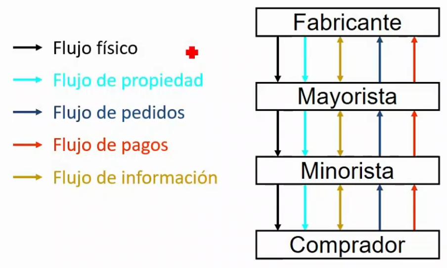
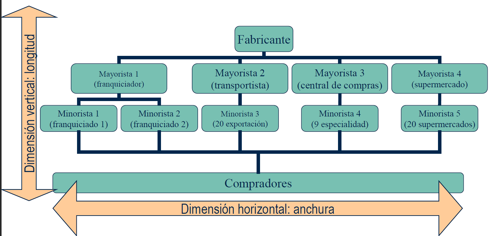
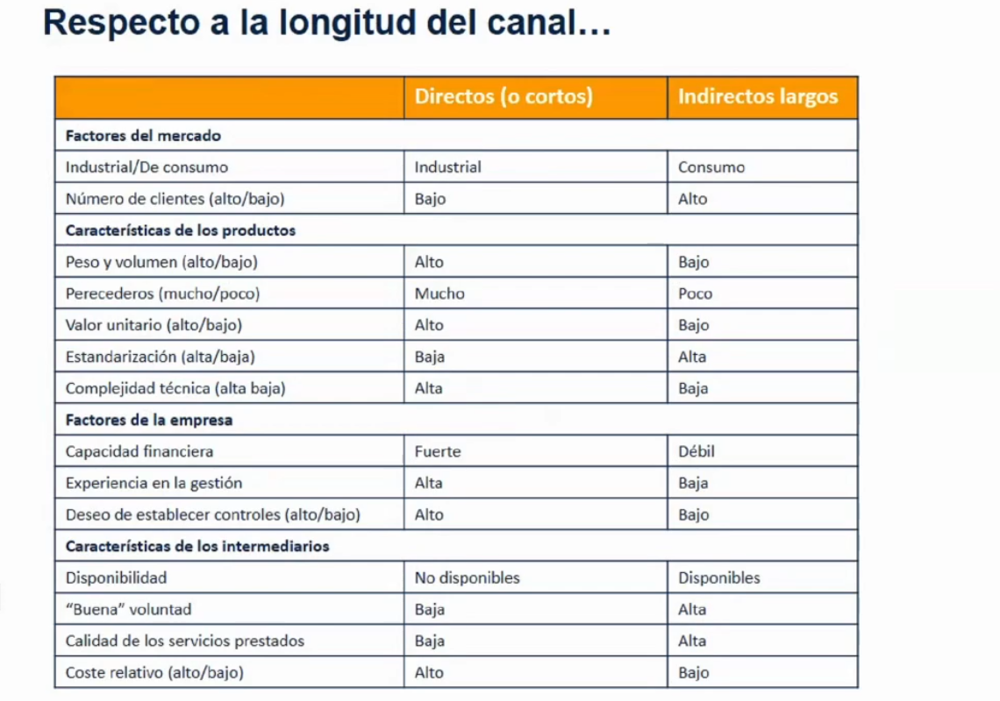

3.1. La distribución comercial y los canales de distribución🔗
Objetivo: hacer pasar los bienes y servicios terminados del estado de producción al estado de consumo.
Función de la distribución dentro del sistema económico: reducir las disparidades entre oferta y demanda → valor añadido de la distribución
Valor añadido de la distribución🔗
- Utilidad de lugar: no tengo que ir a colombia a por café
- Utilidad de tiempo: no es problema la diferencia temporal entre la producción y el consumo o el problema se reduce
- Utilidad de estado: si no quiero un jamón entero puedo comprar 50 gramos
Funciones de la distribución comercial🔗
- Negociación
- Almacenaje
- Surtido y organización de la oferta
- Financiación y otros servicios
- Transporte
- Contactos
- Información
- Asumir riesgos
Estas funciones generan las utilidades.
Flujos comerciales en las actividades de distribución🔗

El canal de distribución🔗
Conjunto de personas y organizaciones que participan en las actividades de distribución impulsando el flujo de bienes y servicios desde su punto de origen hasta su punto de venta o consumo
- Productores
- Intermediarios No son necesarios, pero suele haberlos
- Compradores
Ventajas🔗
- Reducción del número de contactos
- Economías de escala
- Mejor surtido/servicio
Todo esto provoca que los fabricantes se especialicen
Estructura de los canales de distribución🔗
Dimensión del canal de distribución
- Vertical: longitud del canal
- Horizontal: anchura del canal

Tipos de canales según su longitud:
- Canales directos: no hay intermediarios. Productos perecederos alimenticios con volumen de ventas bajo / Productos no perecederos sin cantidad limitante
- Canales indirectos cortos: hay 1 intermediario Productos de consumo duradero
- Canales indirectos largo: hay más de 1 intermediario Nivel 2: Productos de compra frecuente / Nivel = 3: Productos alimenticios (sobre todo los que se importan, que pueden tener hasta 4 o 5 niveles)
Nivel
Nivel X = X intermediarios
Tipos de distribución según su anchura:
- Distribución intensiva: queremos tener el número de puntos de venta posibles. Garantizamos una cobertura total, mayor volumen de ventas y una mayor cuota de mercado. Mayor coste. Se puede perder el control. Peor imagen de marca. (Cocacola) / Productos de compra corriente
- Distribución selectiva: menor coste que la distribución intensiva alcanzando un nivel de covertura aceptable. Mayor nivel de cooperación con los intermediarios y más control sobre la políticas de marketing mixto. Si limitamos demasiado podemos no alcanzar una cobertura adecuada. Puede resultar de una elección forzosa (impuesto por el distribuidor) Muebles, electrodomésticos
- Distribución exclusiva: sólo ciertos distribuidores tienen el derecho exclusivo de vender la marca. Ventajas: máximo control en la política de marketing mix, máxima cooperación con los distribuidores. Inconvenientes: covertura ineficiente, puede resultar de una elección forzosa. Productos de especial calidad y prestigio
Nike
- Canal indirecto largo porque nike no va a contactar con cada cliente personalmente.
- Distribución selectiva porque no va a estar en todas las tiendas, pero tampoco va a estar en cuatro contadas.
Factores relevantes en la configuración del canal🔗
- Características del mercado
- Industrial: canales cortos
- Consumo: canales largos
- Características de los productos
- Compra frecuente (bienes de conveniencia): distribución intensiva
- Compra esporádica: distribución selectiva
- Bienes de especialidad: distribución selectiva o exclusiva
- Características de la empresa
- Características de los intermediarios

Last update: May 30, 2021